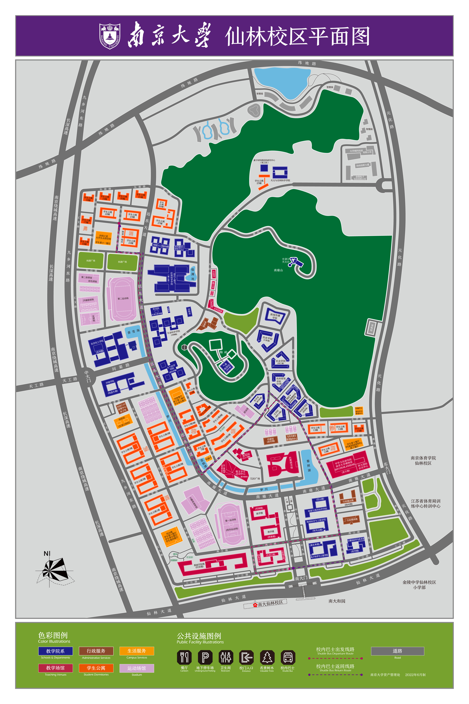

📍 校园导览 | Campus Guide
✕
📍 快速导航 | Navigation
杜厦图书馆 | Duxia Library
查看图书馆的俯视景观
Aerial view of the Library
南门 | South Gate
查看南门的景观
Scenery of the South Gate
菜根谭快递站 | Caigentan Delivery Station
查看菜根谭的详细景观
Detailed view of Delivery Station
方肇州体育馆 | Fang Zhaozhou Gymnasium
查看体育馆的详细景观
Detailed view of the Gymnasium

三维重建: 南京大学仙林校区
3DGS: Nanjing University (Xianlin Campus)